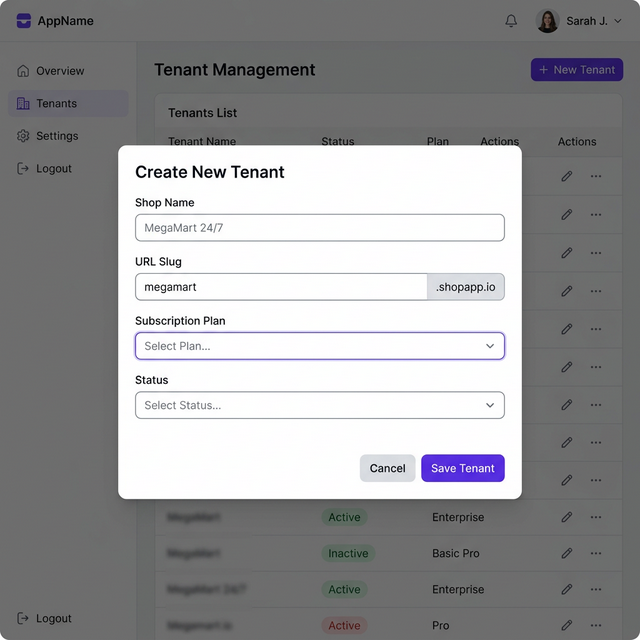

Your comprehensive reference for Tracly ΓÇö a multi-tenant SaaS retail management and billing platform. This guide covers every feature from initial tenant setup to daily operations.
SaaS Architecture
🏢 Multi-Tenant Architecture
Tracly is built as a multi-tenant SaaS platform. This means a single installation can serve multiple independent shops (tenants), each with completely isolated data, configuration, and users.
What is Multi-Tenancy?
Multi-tenancy lets you run many independent shops from one system. Each shop (tenant) has:
🔒 Isolated DataProducts, invoices, customers, and settings are completely separate between tenants. Shop A cannot see Shop B's data.
⚙️ Independent ConfigEach shop has its own name, logo, tax settings, branches, and print styles.
👥 Separate UsersEach tenant has its own set of admins and cashiers. Usernames are unique per tenant.
📊 Private ReportsDashboard KPIs, sales reports, and stock valuations are all scoped to each individual tenant.
Architecture Overview
The system uses a Shared Database, Shared Schema approach with row-level tenant isolation. Every data table has a tenant_id column that the system automatically filters on.
👑 Super Admin Global Platform
→
🏪 Tenant A MegaMart
→
🏢 Branch 1 Warehouse
Placeholder
→
Placeholder
→
🏢 Branch 2 Retail Shop
💡
SaaS Best Practice: The Super Admin manages the platform globally (creating tenants, managing subscriptions). Each Tenant Admin manages only their own shop (inventory, billing, users, branches). Cashiers operate within a single branch of a single tenant.
Authentication
🔑 Login & User Roles
The system supports three distinct user roles, each with specific access levels and capabilities.
Figure: Login page ΓÇö enter your credentials to access the system
👑
Super Admin
Global platform administrator. Manages all tenants, creates new shops, controls subscriptions. Has access to tenant management plus all admin features across shops.
⚙️
Tenant Admin
Shop-level administrator. Manages their own shop's inventory, categories, taxes, branches, users, and configuration. Cannot see other tenants' data.
🧾
Cashier
Branch-level operator. Can only create bills, view invoices, and see the dashboard for their assigned branch within their tenant.
Default Login Credentials
The system comes pre-seeded with two default accounts for getting started:
Role
Username
Password
Access Level
Super Admin
super
super123
Full platform ΓÇö all tenants + tenant management
Tenant Admin
admin
admin123
Default Shop only ΓÇö inventory, config, billing
🔒
Security Warning: Change the default passwords immediately after first login! Go to the User Management section or have the Super Admin update the credentials.
How Login Works in Multi-Tenant Mode
User enters username and password on the login screen.
The system authenticates and generates a JWT token containing the user's tenantId, role, and branchId.
All subsequent API calls are automatically scoped to the user's tenant ΓÇö they can only see and modify their own tenant's data.
This section is exclusively available to Super Admins. It allows you to create, manage, and configure multiple independent shops on the platform.
Figure: Tenant Management dashboard showing all shops with status and plan information
How to Create a New Tenant (Shop)
Log in as the Super Admin (super / super123).
Click Tenant Mgmt in the sidebar navigation.
Click the + New Tenant button at the top right.
Fill in the tenant details:
Shop Name: The display name (e.g., "MegaMart 24/7")
URL Slug: A unique identifier (e.g., "megamart"). Cannot be changed after creation.
Subscription Plan: Basic, Pro, or Enterprise
Status: Active or Inactive
Click Save Tenant. The new shop is instantly created.

Figure: New Tenant creation form with all required fields
Tenant Card Details
Each tenant card on the management dashboard displays:
Shop NameThe display name of the business.
Status BadgeGreen "Active" or Red "Inactive". Inactive tenants cannot login.
URL SlugUnique identifier used internally for routing and identification.
Subscription PlanBASIC, PRO, or ENTERPRISE ΓÇö controls feature availability.
Created DateWhen the tenant was first provisioned.
Edit ButtonClick to modify name, plan, or status of an existing tenant.
Setting Up a New Shop ΓÇö Complete Checklist
After creating a tenant, follow this sequence to fully configure the shop:
#
Step
Where
Required?
1
Create the Tenant
Tenant Mgmt → + New Tenant
✅ Yes
2
Create a Tenant Admin user
Register a user with admin role for the tenant
✅ Yes
3
Create Branches
Admin Settings → Branches
✅ Yes (at least one)
4
Configure Shop Identity
Admin Settings → Shop Config
Recommended
5
Set up Tax Rules
Admin Settings → Tax Settings
Recommended
6
Create Categories
Inventory → Categories
Recommended
7
Add Products
Inventory → + Add Product / Bulk Import
✅ Yes
8
Stock-In Products to Branch
Admin Settings → Stock Mgmt
✅ Yes
9
Configure Print/Bill Settings
Admin Settings → Print Config
Optional
10
Create Cashier Users
Admin Settings → Register user with cashier role
Optional
💡
Pro Tip: After creating a tenant, log in as that tenant's admin to configure everything from their perspective. Each admin only sees their own shop's data, making it impossible to accidentally modify another tenant's settings.
Main Screen
🏠 Dashboard Overview
The Dashboard provides a real-time health check of your business. It is the first screen you see after logging in. All data shown is automatically filtered to your tenant.
Dashboard Widgets
💰 Today's RevenueTotal sales made today across all payment modes for your shop.
📦 Total ProductsUnique items currently in your shop's inventory.
⚠️ Low Stock AlertCount of products that have reached their minimum quantity threshold.
📊 Recent TrendsVisualization of sales performance over the past week.
🏢
Multi-Tenant Note: Each tenant sees only their own KPIs. A Super Admin viewing the dashboard will see an aggregate view only if they are associated with a specific tenant context.
Visual Guide
🚀 Step-by-Step Workflows
Follow these visual guides to master the core lifecycle of your inventory and sales.
1. Adding Inventory (The Setup)
Before you can sell, you must add your products to the system. All products are automatically scoped to your tenant.
Navigate to Inventory in the sidebar.
Click the + Add Product button.
Fill in the product details. Pro Tip: Use a barcode scanner to fill the barcode field instantly.
Click Save Product. Your item is now ready for stock-in or direct sale.
2. Inward Logistics (Stock-In)
Use the Stock Management module to record new stock arrivals or adjustments.
Go to Admin Settings > Stock Mgmt.
Search for your product and select it.
Enter the Quantity received and change the type to Stock In.
Click Record Transaction. The quantity is instantly updated across the app.
3. Outward Flow (The Sale)
The billing screen is your primary interface for customer transactions.
Go to New Bill.
Scan the barcode or type the product name. The item is added to the cart automatically.
Verify the items, select Payment Mode, and click Create Bill (F4).
4. Printing the Bill
Every finalized transaction generates a professional thermal receipt with your shop's branding.
The receipt screen appears immediately after creation.
Review the items and branding (Logo, Watermark, QR Code).
Click Print Receipt for your thermal printer, or Save as PDF for digital storage.
Workflow
🛒 Billing (Point of Sale)
Designed for hyper-fast checkouts. The POS allows for seamless product selection and payment processing.
📍
Branch-Aware Billing: The billing terminal automatically displays and deducts stock only from your specifically assigned branch. If your branch runs out of stock, it will trigger an out-of-stock warning, independent of other branches within the same tenant.
Key Options on this Screen
Product Search (Autofocus)Instantly search by Name or Barcode. Barcode scanners are supported.
Quantity ControlsIncrease/Decrease quantities using +/- buttons or direct entry.
Line-Level DiscountApply a specific discount for just one item in the list.
Bill-Wide DiscountApply a final discount to the subtotal of the entire bill.
Payment Mode ToggleSelect between Cash, UPI, or Card for reporting accuracy.
How to Create a Bill
Search for an item and click to add it to the cart.
Adjust quantities or apply item-level discounts if needed.
Select the Payment Mode (e.g. UPI).
Enter Customer Name/Phone (Optional but recommended for loyalty tracking).
Press F4 or click Create Bill. The receipt will appear instantly.
Management
📦 Inventory & Product List
Manage your catalog, prices, and stock levels effortlessly. All inventory data is scoped to your tenant.
🔄
Global Inventory View: Admins can view the "Global Total" stock counting all stores within their tenant. The stock column breaks down exactly how many units are sitting in each individual retail branch or warehouse.
How to Add a New Product
Go to the Inventory screen.
Click the Add Product button at the top right.
Fill in the following details:
Name: Unique name of the item.
Barcode: Scan the item or enter a unique code (unique per tenant).
Category: Select from your tenant's predefined categories.
Selling Price: The price customers will pay.
Cost Price: Your purchase price (used for profit reporting).
Initial Stock: Current count on the shelf.
Minimum Stock: Level at which the app triggers a "Low Stock" alert.
Click Save Product.
Analytics
📊 Advanced Reporting Module
Each report type serves a specific business intelligence purpose. All data is tenant-isolated.
Report Type
What it Shows
Strategy Use
Daily Sales
Itemized list of every sale today + total tax collected.
Reconcile drawer at end of day.
Monthly Summary
Aggregated totals per day for the entire month.
Track monthly growth.
Top Selling Products
Ordered list of items by volume sold.
Identify what to stock more.
Stock Valuation
Total value of inventory (Cost vs. Selling value).
Determine asset value.
Low Stock List
Filtered list of items needing reorder.
Procurement planning.
Admin
⚖️ Tax Management
Set up GST, VAT, or any custom tax rules applicable to your region. Each tenant has independent tax configurations.
How to Configure Taxes
1. Create Tax Rule: Go to Admin > Taxes. Add a rule like "GST 18%" with the rate "18".
2. Set Tax Mode: Go to Shop Config. Choose how taxes are applied:
Product-WiseHighest precision. Set a specific tax for every product individually.
Category-WiseSpeedy setup. Assign a tax to a category, and all items in it follow that rule.
Global/SimpleApply a flat percentage to the entire bill subtotal.
🏢
Multi-Tenant Note: Tax setups are completely independent per tenant. MegaMart can use Product-Wise GST while QuickStop uses a flat 5% sales tax ΓÇö they never interfere with each other.
Admin
🏢 Branch Setup & Management
The system supports a multi-branch architecture within each tenant. You can operate one Central Warehouse and multiple Retail Branches ΓÇö all isolated within your tenant.
Figure: Branch Management showing warehouse and retail locations with status
How to Set Up Branches
Go to Admin Settings > Branches.
Click + Add New Branch to create a new location.
Fill in the branch details:
Branch Name: e.g., "Main Warehouse" or "Mall Outlet"
Address: Physical location address
Phone: Contact number
Is Central Warehouse? Check if this is a bulk storage location
Active: Enable or disable the branch
Mark branches as Active. Cashiers and users will be assigned to these branches to constrain their billing environments.
Branch Architecture Per Tenant
Branch Type
Purpose
Example
Central Warehouse
Bulk storage. Receives stock-in from suppliers. Distributes to retail via transfers.
"Main Godown"
Retail Branch
Customer-facing shop. Cashiers bill from here. Stock is transferred in from the warehouse.
"Mall Outlet", "Downtown Shop"
💡
Centralized Stock: The recommended approach is to add new inventory batches into your Central Warehouse first, then use Stock Transfers to fulfill individual retail branch stock needs. Each tenant's branches are completely separate from other tenants' branches.
🔒
Tenant Isolation: Branches are tenant-scoped. Even if two different shops have a branch named "Main Branch", they are completely independent entities with separate stock, users, and transactions.
Management
🚚 Stock Transfers
Move inventory securely between your Central Warehouse and individual Retail Branches with complete tracking. All transfers are restricted to branches within the same tenant.
How to Transfer Stock
Navigate to Admin Settings > Stock Transfers.
Click + New Transfer Request. Select the Source (e.g. Warehouse) and Destination (e.g. Retail Shop).
Add the products and quantities you wish to transfer.
Once submitted, the Warehouse admin logs in and clicks Ship to dispatch the items.
When the stock arrives physically, the Retail branch clicks Receive. The system will automatically deduct stock from the source and add it to the destination's branch-specific inventory.
Transfer Status Flow
📝 Pending
→
📦 Shipped
→
✅ Received
Stock quantities are only updated when a transfer is marked as "Received"
Admin
🏪 Shop Configuration
Configure your shop's identity, tax mode, and display preferences. Each tenant has completely independent settings.
🏪 Shop NameYour business name that appears on bills, headers, and reports.
📍 AddressFull shop address printed on receipts.
📞 Phone & EmailContact information for bill headers.
🆔 GSTINYour tax identification number (printed on receipts for compliance).
⚖️ Tax ModeChoose between Product-Wise, Category-Wise, or Global tax application.
🎨 ThemeToggle between Light and Dark modes across the entire application.
How to Configure Your Shop
Navigate to Admin Settings > Shop Config.
Fill in your Shop Name, Address, Phone, Email, and GSTIN.
Select your preferred Tax Mode (Product-Wise is recommended for GST compliance).
Choose your Theme preference.
Click Save Settings. All settings take effect immediately.
🏢
Multi-Tenant Isolation: Settings are stored per tenant_id. When MegaMart changes their shop name or tax mode, it does not affect QuickStop's configuration. Each shop is an independent entity.
Branding
🖨️ Master Print & Brand Config
This screen controls the visual output of your business identity on receipts and bills. Configuration is per-tenant.
Branding Options
Layout StyleModern: Accented colors. Classic: Business borders. Minimal: Clean text.
Paper Size80mm Thermal, A4, or A5. The system automatically adjusts table widths.
WatermarkToggle "Yes" and enter text (e.g. "OFFICIAL") to show a rotated background label.
UPI QR CodeEnter your UPI ID. A scannable code appears at the bill bottom for instant payments.
Logo UploadUpload your shop logo (PNG/JPG). Enable "Display Logo" to show it on bills.
💡
Pro Tip: Use the Live Review frame on the right side of the Print Config screen. It updates in real-time as you change settings, allowing you to perfect your bill design without wasting paper.
Admin
🛠️ Stock Control
Record stock-in arrivals, damage write-offs, and inventory adjustments. All operations are tenant-scoped ΓÇö you can only manage your own shop's products.
Operations
📥 Stock InRecord new arrivals from suppliers. Increases global and branch stock.
⚠️ DamageWrite off damaged goods. Decreases stock with a reason log.
📊 Transaction HistoryComplete audit trail of all stock movements with timestamps.
Admin
🏷️ Discount Rules
Create automatic discount rules for products. All discount rules belong to your tenant only.
How to Set Up Discounts
Go to Admin Settings > Discounts.
Click + Add Discount.
Select the Product, choose Discount Type (Percentage or Flat), enter the value, and optionally set start/end dates.
Toggle Active to enable or disable the rule.
Admin
📂 Bulk Inventory Import
Save time by importing your entire product list using a CSV file. Imported products are automatically assigned to your tenant.
CSV Format Requirements
Your CSV file should have the following headers and sample data format:
Header
Example Value
Description
name
Basmati Rice 1kg
Product Display Name
barcode
8901234001
Unique ID (Scan your item)
category_id
1
Internal category ID
cost_price
85
Your purchase price
selling_price
110
Customer price
quantity
50
Current stock count
tax_rate
18
Tax percentage (0, 5, 12, 18, 28)
💡
Import Tip: If a barcode already exists in your tenant's system, the import will update the existing product instead of creating a duplicate. Barcodes are unique per tenant, so different tenants can have the same barcode without conflicts.
Finance
📊 Advanced Tax Configuration
Our system supports complex tax requirements for different retail industries.
Tax Application Modes
Go to Admin Settings > Shop Config to select your mode:
Product Wise (Recommended): Each item uses its OWN tax rate (set in the inventory). Use this for GST/VAT where products have different slabs.
Category Wise: Individual items don't have taxes. Instead, every product in "Groceries" gets one rate, while "Electronics" gets another.
Global Simple: A flat percentage (e.g., 5% Sales Tax) is applied to the final bill subtotal.
🛡️
Verified Logic: During billing, if you select "Product Wise", the system calculates the tax contribution of every single item separately, ensuring 100% compliance with complex tax laws.
🚨 Troubleshooting
Logo not showing?
Ensure you have clicked Upload Logo and the image appears in the thumbnail. Also ensure "Display Logo on Bill" is set to "Yes".
GSTIN not appearing?
Enter your GSTIN in the Shop Config screen. All shop identity data is pulled from there for the receipt header.
Can't see Admin Settings?
Only users with the admin or superadmin role can see Admin Settings. Cashier users have limited access. Check your role in the profile.
Can't see Tenant Management?
The Tenant Mgmt menu item is exclusively visible to Super Admin users. Log in with the super account to access it.
Data from another shop appearing?
This should never happen if the system is working correctly. All data is scoped by tenant_id at the database level. If you suspect a leak, delete the database file and restart the server to recreate it with clean tenant isolation.